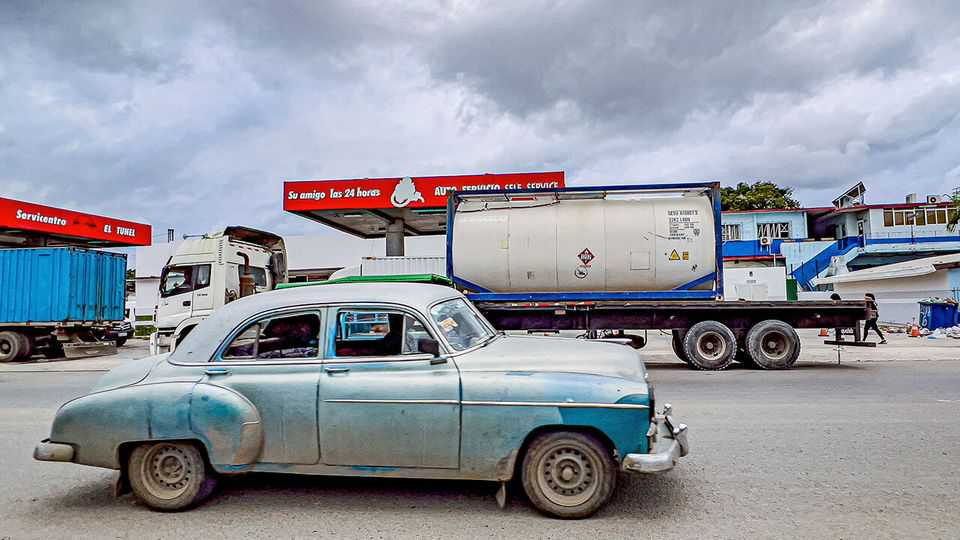

America makes waves in Cuba
But it shouldn’t undermine the growth of the island’s private sector

Oct 15th 2026
SINCE HIS return to power, President Donald Trump has made clear that he hopes to bring down Cuba’s repressive regime. This year he struck upon a cruel approach: blockading the impoverished island’s fuel supply. The idea was that growing hardship would spur Cubans to protest, and then to topple their vile leaders. Misery duly followed, as Cubans suffered more blackouts, buses stopped running and food got more expensive. Political change did not come. Yet by accident or design, the blockade has still created an opportunity.
For decades Cuba got most of its imported fuel from Venezuela and, as with most of the economy, Cuba’s government had a monopoly over the trade. That arrangement collapsed in January when American forces captured Nicolás Maduro in Venezuela and threatened sanctions on anyone who sent oil to Cuba’s regime. Facing paralysis, the island’s government loosened its grip on private businesses, letting them import fuel for the first time since the revolution in 1959. America’s administration, in turn, authorised exporters to sell it to them.
American fuel exports to Cuba’s private sector are now rising swiftly. This, happily, is relieving a portion of the suffering that the sudden blockade has caused. The heavy fuel that is necessary to keep Cuba’s power stations running is not yet flowing. But cars are returning to the streets and you can hear the whirring of small generators.
As a result Mr Trump has gained leverage over a country that depends on America for food and remittances. Private business is growing, and not just in importing fuel. The state has leased some petrol stations to entrepreneurs. On October 12th it enacted a law to encourage private participation in the oil industry, from exploring and refining to selling. Cuba-watchers hope the government may next be forced to privatise power plants—and even the state’s oil-and-gas arm, Cupet.
A stronger private sector would in turn loosen the grip of Gaesa, a sprawling and corrupt military conglomerate. Marco Rubio, America’s secretary of state, says the deal on fuel is intended to put the private sector in a “privileged position”. Unfortunately, his boss has not got the memo. On September 30th, without explanation, Mr Trump’s administration reversed a 2024 rule that had let Cuban entrepreneurs bank with American institutions, forcing banks to freeze their accounts.
Mr Trump should backtrack and return to helping private firms grow. Many object that Cuba’s private businesses are a façade for the regime, or that America’s policies will create a new oligarchy. But the American administration can do much to weed out importers that are merely fronts for Cuba’s government. The announcement on October 7th that America had seized some 90 fuel shipments headed not for private buyers but for a state firm under sanctions is a welcome sign. On balance, it is better for Cubans if the children of the ruling class focus on getting rich rather than repressing them.
Another worry is that Mr Trump will settle for an America First arrangement, inspired by his deal with Venezuela’s interim government. That handed majority control of more than 65bn barrels of Venezuela’s oil reserves to a new American-backed company in which the Pentagon holds a 35% stake.
A new licence allows some Venezuelan oil to be resold to Cuba’s private sector. That could revive the Caracas-Havana route, only with the American government and American firms taking their cuts. Mr Trump would then be invested in keeping the oil flowing, whatever the situation in Cuba. Instead, private actors need the freedom to vie for business competitively.
A blockade with no end-game remains a recipe for humanitarian disaster. The Castro family and the ruling elite will be hard to dislodge. But America has found that strengthening the private sector in Cuba is the most effective tool available. Mr Trump should use it. ■